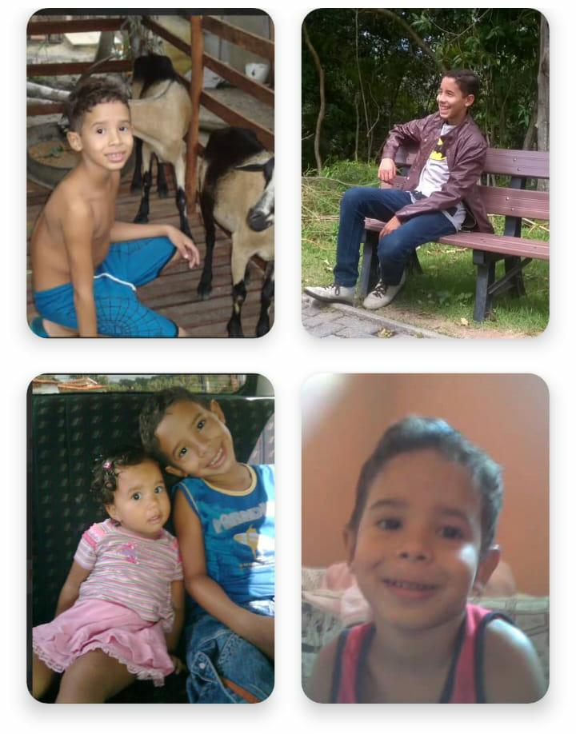
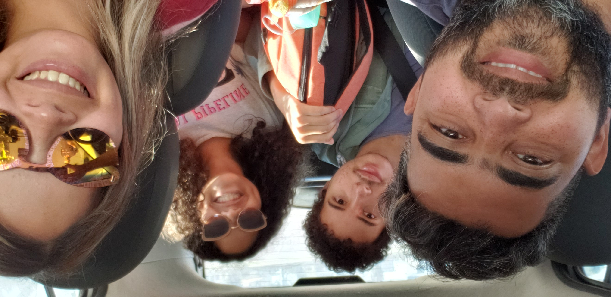
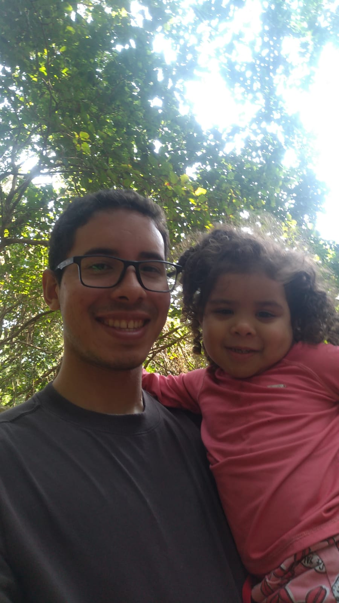
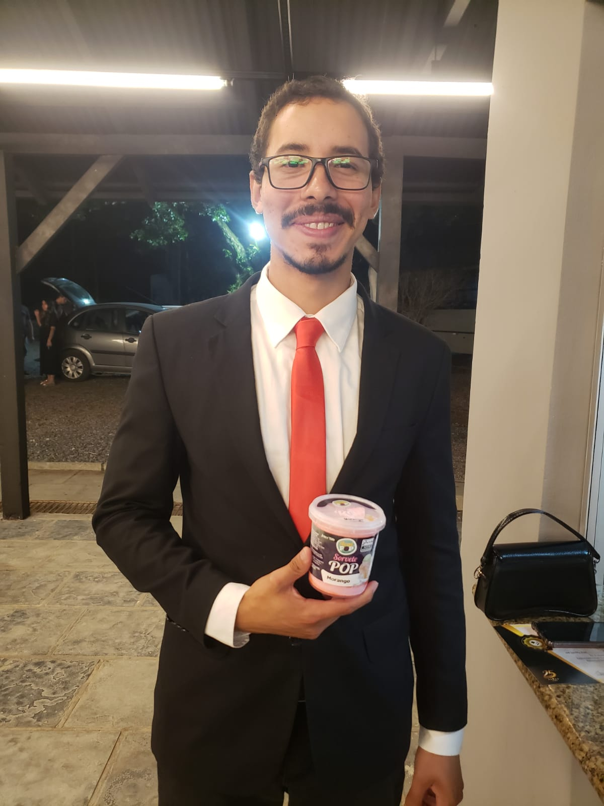

Todos os meus olhos
Olá, Kamila Eduarda Ceasar.
Antes de tudo, quero te pedir desculpas por minhas respostas serem tão cheias de palavras e conteúdo.
Às vezes, minha mente fica um pouco bagunçada com tantos pensamentos, e escrever dessa forma é o jeito mais fiel que encontro de expressar o que realmente estou sentindo e pensando — Nem sempre cabe em poucas palavras.
Achei interessante o seu jeito de mostrar sua alma: "Esses são os meus olhos." Então, para que você entenda melhor o meu comprometimento e amor para com a sua pessoa, vou mostrar-lhe os meus olhos. E, por favor, note os tons de amor, desespero, medo e certeza expressos na minha íris.
Meus olhos na infância

Estes são meus olhos na infância, totalmente fascinados com o mundo que me cercava.
Não vou mentir: minha vida era ótima, e eu não sabia.
Ela começou com fins de semana na fazenda do meu avô, filmes em família, o lanche do Kako… Deus, como eu amava aquele lanche!
Eu não sabia o que eram problemas, as pessoas cobriam os pecados diante da minha inocência.
E eu queria — e ao mesmo tempo não queria — conhecer aquela máxima: “Os tempos ruins passam, e os bons também.”
Esses olhos deixaram saudade.
Meus olhos quando comecei a perceber o pecado
Não tenho uma imagem dessa época - Quem... Quem... Quem...
Mas lembro ainda hoje de quando fiquei sabendo que minha família, e estou falando de
parentes por parte de pai, não seria mais a mesma por conta de um pecado que meu avô,
quem eu tanto admirava, havia cometido.
Eu vi a minha vó chorando, e dessa vez ela não estava orando - Eu fiquei confuso.
Eu vi o meu pai decepicionado e falando coisas contra o meu avô..
Eu vi e comecei a entender que a vida é mais complicada do que parecia na época
Meus olhos quando me tornei ateu

Foi aos poucos que comecei a virar as costas para Ele.
Minha mente entoava canções com o inimigo toda vez que eu via algo de errado na igreja, na minha família, e não encontrava respostas para os meus dilemas com um pastor.
Então eu descobri as ciências humanas e as filosofias que explicavam a minha insignificância diante do cosmos — e elas quase estavam certas — mas ignoravam o fato de que Deus conhece o meu nome e sabe quantos fios de cabelo eu possuo.
Mas esses são os meus olhos depois que disse “não” ao meu Criador e decidi pecar contra Ele.
Sério! Eu escutava músicas satânicas, mentia para os meus pais por puro prazer... Não fazia coisas como usar drogas, mas decidia sair de casa, comer besteira, só para depois mentir dizendo que estava na igreja, por exemplo.
E calma — piora.
Lembro-me de quando convidei três amigos para ir a um ensaio dos jovens na igreja, e a gente ficou escutando rap nos bancos lá do fundo.
Enfim...
Meus olhos conheceram a dor, a aflição de alguém sem vida, sem se sentir amado.
Meus olhos quando conheci o Amor

Esses são meus olhos quando conheci Ele, que me amou apesar de tudo o que eu era, alguém que o dava todos os motivos
para que Ele me despresasse. Mas de forma gratuita, escandalosa, intensa e misteriosamente Ele me amou. De repente eu entendi:
O amor "Tudo sofre, tudo crê, tudo espera, tudo suporta."
Para mim, não existe outro modelo de amor.
Meus olhos quando conheci você
Primeiro, você era alguém impossível para mim.
Literalmente, a mais linda, a mais inteligente.
Eu ficava nervoso perto de você, mas aproveitava todas as oportunidades para ficar nervoso de novo.
Você acelera o meu coração, dilata a minha pupila e muda o meu caráter, porque sei muito bem que o seu valor é imensurável — e eu quero você na minha vida.
Por isso, busco melhorar todos os dias (primeiro para Deus, claro).
Depois, eu e você começamos a conversar.
Eu não via o tempo passar — só percebia quando as pessoas me traziam de volta ao mundo ao meu redor e diziam que eu já estava há um tempo apenas olhando para o celular, sorrindo que nem um bobo.
E eu me lembro de dizer a você que te amo — e, quando eu disse isso, eu estava pensando em Jesus.
Ele me ensinou a amar me amando.
Enquanto eu o desprezava e agia contra Ele, Ele me amou.
Você não causa esse efeito em mim; você me ajuda a viver, acredita em mim e me faz muito bem.
Então é óbvio que eu vou te amar — e isso independe da situação.
Que os nossos "Eu te amo" jamais sejam rotina

Portanto
Portanto, dona Kamila, não pense que o meu amor por você é apenas para os bons momentos — ele é para sempre, inclusive nas guerras.
É verdade, esse mundo é hostil e a gente está lutando constantemente, mas sabe de uma coisa? Eu quero lutar com você (ao seu lado).
Talvez estejamos apanhando agora, mas, no momento em que começarmos a bater, vamos bater com força — e vamos, sim, ser muito felizes, porque a gente tem JESUS.
E acredite: vão haver momentos em que eu estarei mais fraco e você mais forte.
E eu peço que me ajude quando esses momentos chegarem.
Vamos continuar lutando Kamila.
E para concluir hehehe:
"não se trata de bater forte. Se trata de quanto você aguenta apanhar e seguir em frente, o quanto você é capaz de aguentar e continuar tentando. É assim que se consegue vencer." - Rocky Balboa